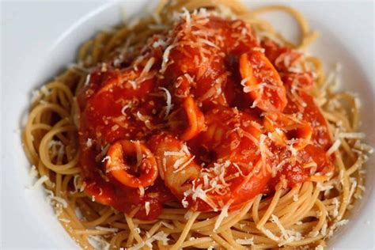

Pasta

This spicy diavolo sauce with shrimp and scallops is best served with linguine pasta.
Ingredients
- 4 tablespoons olive oil, divided
- 6 cloves garlic, crushed
- 3 cups whole peeled tomatoes with liquid, chopped
- 1 ½ teaspoons salt
- 1 teaspoon crushed red pepper flakes
- 1 (16 ounce) package linguine pasta
- 8 ounces small shrimp, peeled and deveined
- 8 ounces bay scallops
- 1 tablespoon chopped fresh parsley
Steps
- Heat 2 tablespoons of olive oil and garlic in a large saucepan over medium heat. When garlic starts to sizzle, pour in tomatoes and season with salt and red pepper flakes. Bring to a boil, then simmer over low heat, stirring occasionally, for 30 minutes.
- Meanwhile, bring a large pot of lightly salted water to a boil. Cook pasta for 8 to 10 minutes, or until al dente; drain.
- Heat remaining 2 tablespoons of olive oil in a large skillet over high heat; add shrimp and scallops. Cook, stirring frequently, until the shrimp turn pink, about 2 minutes Add shrimp and scallops to tomato mixture and stir in parsley. Cook until sauce just begins to bubble, about 3 to 4 minutes. Serve sauce over pasta.